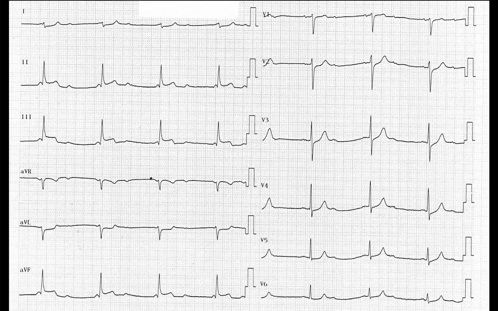
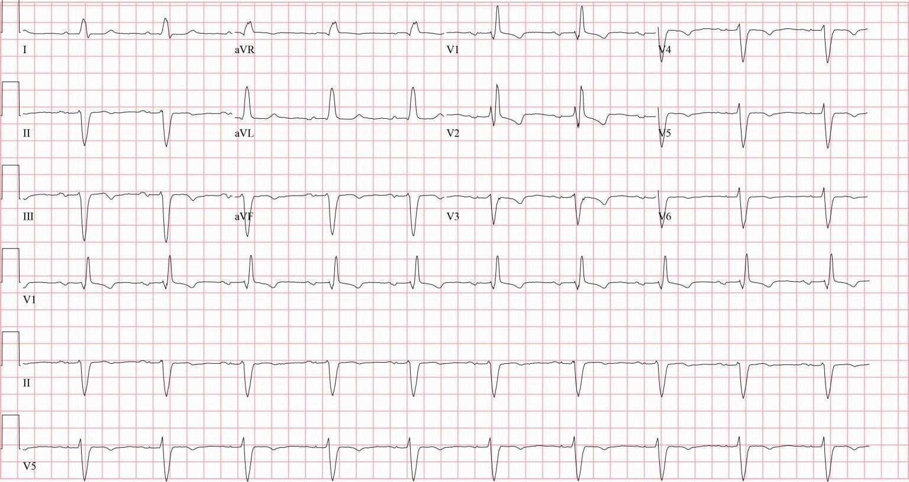
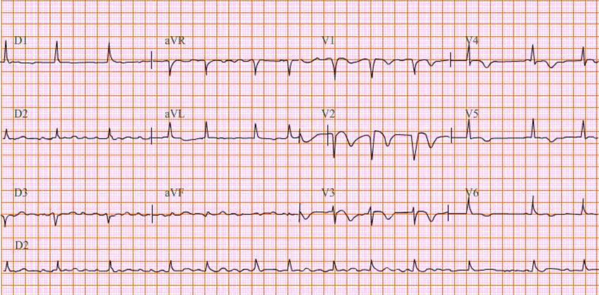
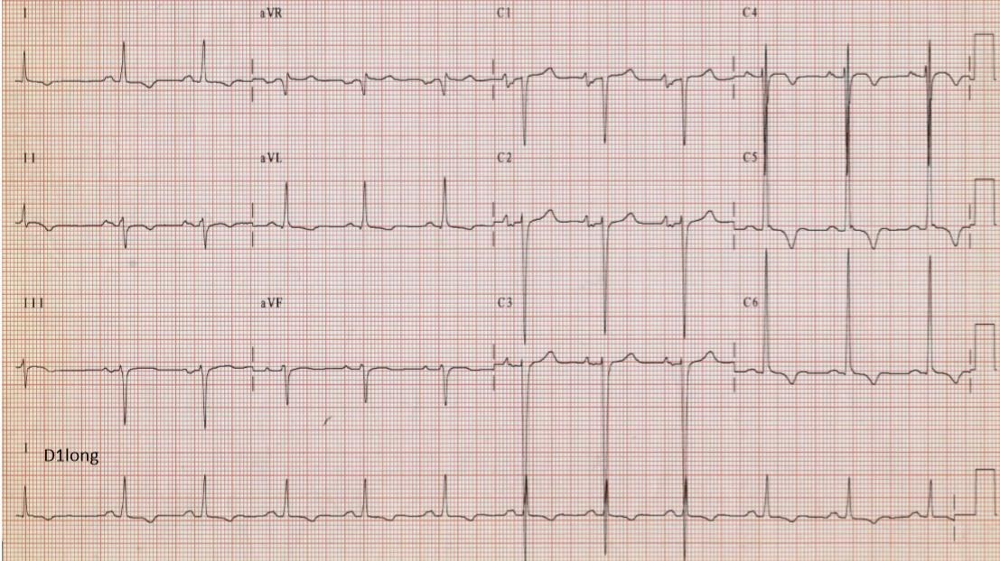
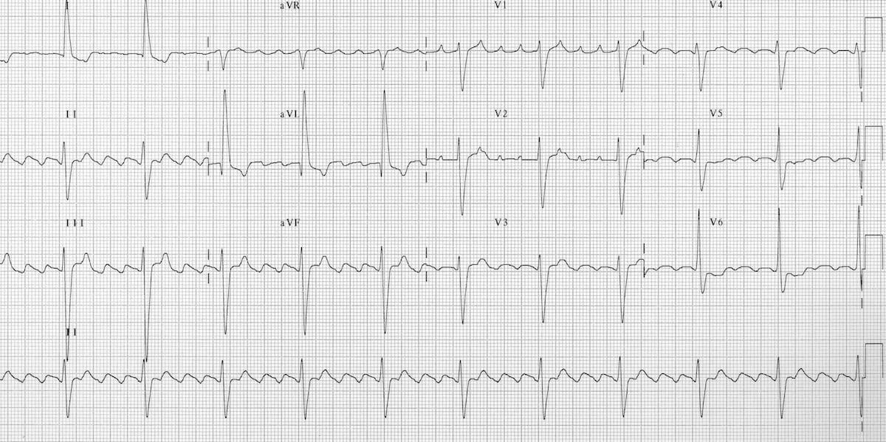
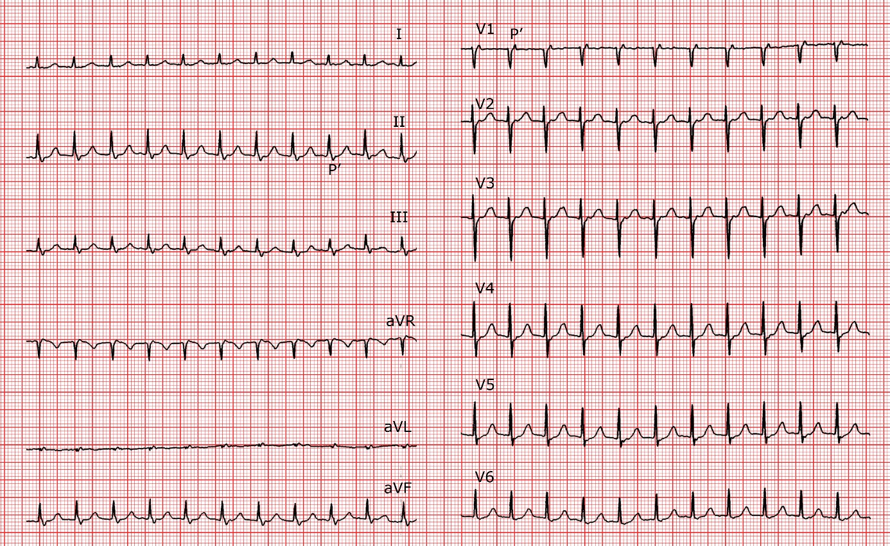
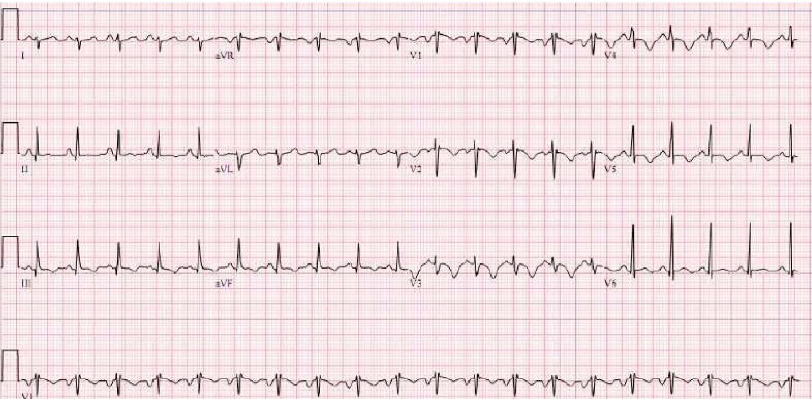
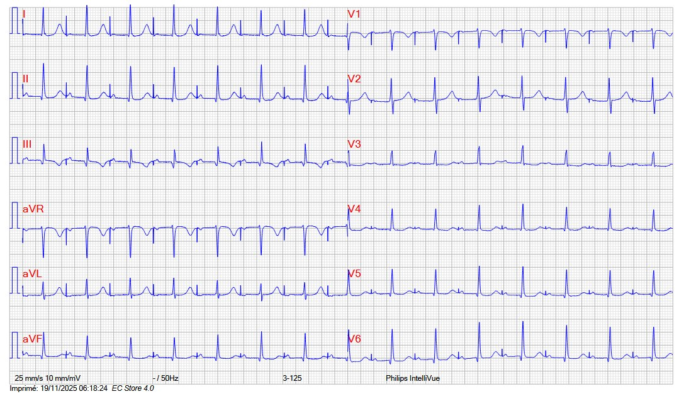
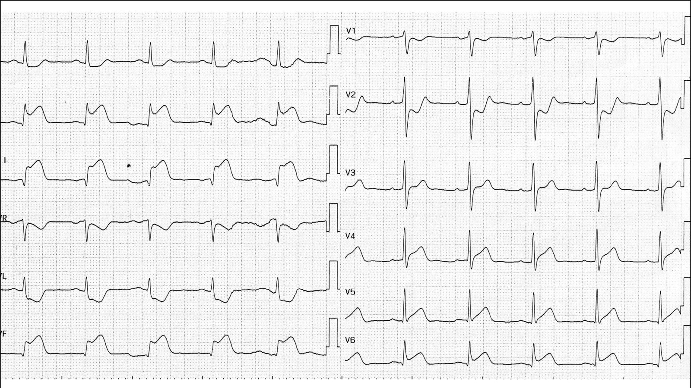
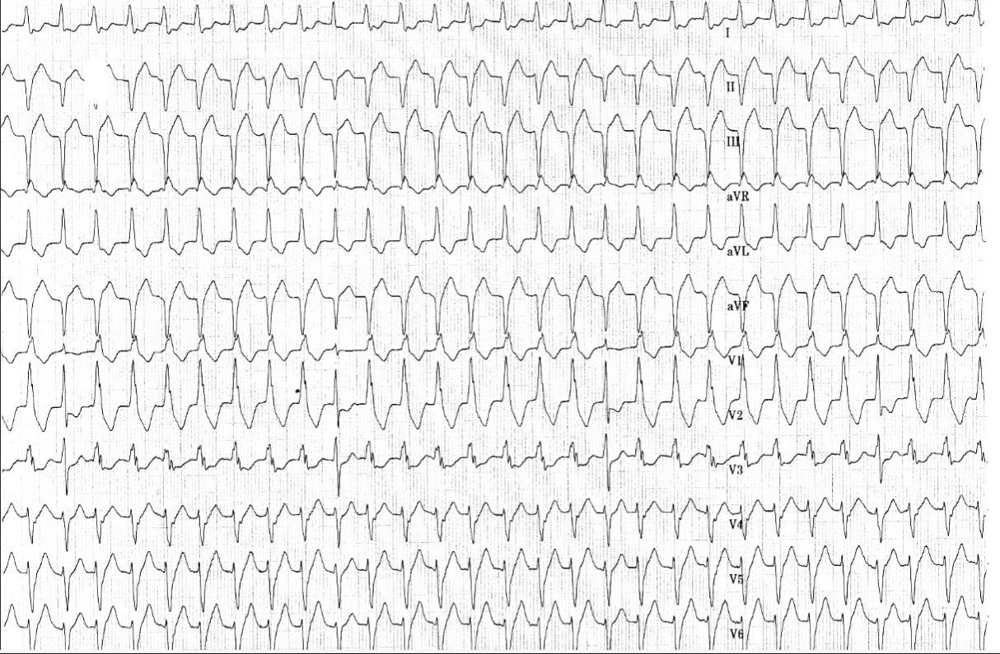

Répondez mentalement, puis touchez « Réponse ».

Femme de 72 ans. Hypertension artérielle, dyslipidémie, polyarthrite rhumatoïde. Malaise brutal avec asthénie ; adressée au service d'urgences par la BSPP. Tracé : QRS fins en échappement jonctionnel à 50 par minute, sans relation avec les ondes P ; sus-décalage du segment ST inférieur avec miroir latéral haut.
bloc auriculo-ventriculaire complet sur syndrome coronarien aigu ST+ inférieur.
l'échappement est jonctionnel, situé au-dessus du faisceau de His.

Femme de 86 ans, très bon état général, sans antécédent notable. Plusieurs malaises d'allure syncopale récents. Tracé : rythme sinusal régulier, bloc auriculo-ventriculaire de type 1, bloc de branche droit complet, hémibloc antérieur gauche.
bloc bifasciculaire (bloc de branche droit et hémibloc antérieur gauche) avec bloc auriculo-ventriculaire de type 1.
un bloc auriculo-ventriculaire complet imminent ; le diagnostic de bloc trifasciculaire se fait par exploration électrophysiologique avec un intervalle HV supérieur ou égal à 70 ms.

Homme de 81 ans. Hypertension, diabète non insulinodépendant, dyslipidémie, insuffisance rénale chronique modérée, ulcère gastroduodénal avec hématémèses. Dyspnée depuis 72 heures. Douleur constrictive de 10 heures survenue cinq jours plus tôt, sans consultation. TA 190/100 mmHg, FC 100 par minute, SpO₂ 95 % sous 4 litres d'oxygène. Tracé : fibrillation atriale, ondes Q de nécrose en V1 et V2, ondes T négatives antérieures étendues. Troponine 18 ng/L (normale inférieure à 14).
infarctus antérieur vu tardivement, compliqué de fibrillation atriale et d'insuffisance cardiaque.
le syndrome coronarien est vu tardivement, sans douleur actuelle ; le bénéfice est pesé par rapport au risque.

Homme de 80 ans. Hypertension sévère sous trithérapie. Tabac sevré. Antécédents : cardiopathie hypertrophique post-hypertensive avec insuffisance cardiaque à fraction d'éjection conservée, sclérose aortique, insuffisance rénale modérée sur néphroangiosclérose. Coronarographie normale il y a deux ans. Adressé en consultation pour une dyspnée de stade 2 (NYHA II), sans douleur thoracique de repos ni angor, sans lipothymie ni syncope. Tracé : rythme sinusal, QRS fins avec hypertrophie ventriculaire gauche électrique, ondes T négatives secondaires à l'hypertrophie ventriculaire gauche.
rythme sinusal, QRS fins, hypertrophie ventriculaire gauche électrique, ondes T négatives secondaires.
non ; les ondes T négatives sont secondaires à l'hypertrophie ventriculaire gauche.

Femme de 83 ans. Antécédent de bronchopathie chronique obstructive post-tabagique. Consulte au service d'urgences pour des palpitations avec vertiges depuis 72 heures. FC 150 par minute, TA 120/70 mmHg, SpO₂ 95 % en air ambiant, sans signe d'insuffisance cardiaque. Hémoglobine 12 g/dL, plaquettes 230 000/mm³, globules blancs 9 000/mm³, créatinine 70 µmol/L, kaliémie 4,3 mmol/L, TP et TCA normaux, troponine négative, BNP 150 pg/mL. Tracé : tachycardie régulière à QRS fins, fréquence 150 par minute, ondes F en « toit d'usine », conduction ventriculaire 2:1.
flutter atrial typique avec conduction 2:1.
anticoagulation efficace, ralentissement par bêtabloquant ± digoxine, échocardiographie transthoracique après ralentissement, bilan thyroïdien ; discuter l'ablation du flutter à distance.

Femme de 65 ans, sans antécédent notable. Plusieurs épisodes de palpitations, jamais explorés. Examen clinique rassurant. Tracé : tachycardie régulière à QRS fins, fréquence supérieure à 100 par minute.
tachycardie par réentrée intranodale (TRIN).
manœuvres vagales puis adénosine (Striadyne), sous surveillance électrocardiographique continue.
l'asthme, en raison de l'effet bronchoconstricteur. Sa demi-vie est très courte, d'environ 20 secondes.

Femme de 83 ans, deuxième jour après une prothèse totale de hanche. Malaise en chambre sans perte de connaissance. Dyspnée. TA 143/81 mmHg, FC 124/min, SpO₂ 90 % en air ambiant, FR 23/min, T° 38,3 °C. Tracé : tachycardie sinusale, bloc incomplet droit, déviation axiale droite, hypertrophie auriculaire droite, ondes T négatives antéroseptales.
embolie pulmonaire.
une embolie pulmonaire peut coexister avec une infection.

Femme de 78 ans, antécédent de stimulation pour maladie rythmique de l'oreillette, hypertension artérielle. Asymptomatique. Examen sans particularité. Tracé : spike unipolaire de haute amplitude avant chaque onde P, QRS fins spontanés.
une stimulation électrique du stimulateur, et non une activité spontanée.
test à l'aimant et interrogation du boîtier.

Homme de 77 ans, bon état général, tabagisme actif, hypertension, dyslipidémie, surpoids, BPCO post-tabagique. Douleur thoracique constrictive depuis 30 minutes, appel du SAMU. Pas de signe d'insuffisance cardiaque, pas de souffle. Tracé : sus-décalage du segment ST inférieur avec miroir dans les autres dérivations.
syndrome coronarien aigu ST+, infarctus transmural inférieur.
l'anticoagulation pendant la coronarographie est la règle (ESC 2023) ; une anticoagulation curative prolongée répond à une autre indication.

Tracé : fréquence 150 par minute, QRS à 160 ms, axe à −76°. Le support ne donne pas de diagnostic pour ce cas.
la tolérance hémodynamique.
capture, fusion, dissociation auriculo-ventriculaire, absence d'effet de l'adénosine.
le considérer comme une tachycardie ventriculaire jusqu'à preuve du contraire.